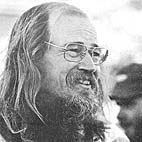
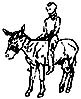
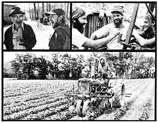
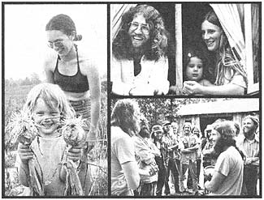
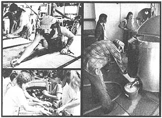
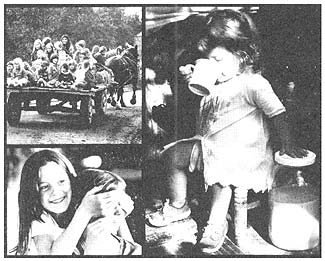
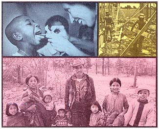
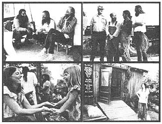

It all started in the fall of 1966 when someone decided to start an experimental college in San Francisco . . . and away over in the corner of the registration room a guy named Stephen Gaskin put up a little sign which said he'd be teaching something called "Monday Night Class".
Only six people made it through that first semester with Gaskin. So he began tinkering around with new names for his course. First it was "Group Experiments in Unified Field Theory" . . . then "Magic, Einstein, and God" . . . and then "North American White Witchcraft". But what that Monday Night Class was really about all the time was religion and the psychedelic-drug-inspired, long-overdue spiritual reawakening which was then just beginning to stretch, come alive, and sweep across our jaded, materialistic, modern world.
And . . . slowly at first . . . then faster and faster, the most aware "flower children" and "hippies" who had come to San Francisco in the 60's because they'd heard that "something" was going on there . . . the best and the brightest of these people were attracted to Stephen's class. And as the class grew, Gaskin had to move it from the campus where it had begun . . . to a church . . . to the Straight Theatre . . . to a rock hall. And he had 50, then 250, then 1,000, then 2,000 people filling that hall every Monday night. Two thousand people out of a total congregation of at least 5,000 of the happiest, most joyous souls in San Francisco! Laughing, loving, gentle people who looked into each other's eyes . . . and found God.
And it is still curious that neither the "establishment" nor the "underground" press of the city ever reported much about this magnificent achievement. Instead, they devoted whole pages of every edition of their papers to the false prophets of the day: the warped and twisted prophets who said that The Answer was ever-more-exotic mixtures of reality-altering chemicals . . . that The Answer was "kill your parents" . . . that The Answer was "drop out, steal, and live on welfare" . . . that The Answer was violent confrontation in the streets.
But some of the rest of the country was not so retarded, and Stephen began getting a trickle-then a flood-of invitations to come and speak at churches and colleges across the United States. And every time he suggested the idea of recessing the Monday Night Class for a few months while he toured the nation to honor these requests, a funny thing happened: Members of what was now a religious congregation kept popping up to ask, "Can we go with you?"
"When we finally pulled out of San Francisco on October 12, 1970," Gaskin now remembers, "there were about 250 of us in 20 or 30 old buses. We were on the road for four months and the farther we went, the more people there were who joined the caravan. Pretty soon there were three or four hundred of us and the police were meeting us every time we crossed a state line."
The local constabulary was vitally-sometimes even aggressively-interested in Stephen's caravan almost everywhere it went, of course, because of the general smart-ass attitude exhibited by far too many members of 1970's self-proclaimed "counterculture". The only other psychedelically painted bus that most of those cops had ever seen had been driven by some dirty, drug-crazed freaks who'd crapped in the middle of the street and ripped off the local service station for a tank of gas. And now here were thirty more busloads of the same kind of crazies pulling into town all at once! Lord have mercy!
And the Lord did have mercy. Because Stephen's caravan was honest . . . and polite . . . and as clean as you can be living out of a bus . . . and . . . and . . . and . . . joyously religious. Sure, they had long hair and there were rumors they smoked that there maryjewennie and they were all dressed up in brightly colored secondhand clothes just like that last busload . . . but these people were different. They were different. As a matter of fact, they were downright OK. And that Gaskin fellow who seemed to be their leader . . . well, he was a pretty good preacher too! Knew his Bible, that was easy enough to see.
By the time Stephen's caravan rolled back into San Francisco in late January of '71, it was obvious to all aboard that they were somehow . . . stronger . . . more tied together . . . than they'd been when they'd left the town four months before. "We had become something on that trip. We could no longer just separate and go back to our separate apartments and our separate lives. So we thought back to the parts of the country we'd especially liked on our tour and Stephen said, `Let's go to Tennessee and get a farm,' and we all said, `Yeah, let's go to Tennessee and get a farm'. "
And that's just what Stephen and 250 of his spiritual followers did. They went to Tennessee and, after some minor hassles and a few months spent looking over property and letting the natives see that they weren't going to go on welfare or put a hex on the livestock or start a violent revolution in the cornfields, they bought a 1,014-acre farm for $70 an acre.
That was in late 1971. Since that time, The Farm has been expanded to 1,700 acres and incorporated as a non-profit church and foundation and Stephen has been officially recognized as a minister by the state of Tennessee. And he marries people who, if they expect to stay on The Farm and in his congregation, understand that they're also to stay married and true to each other till death do them part.
There's none of this hippie "free love" monkeying around on The Farm. And Farm ladies are expected to stay clean and nice and feminine and be good mothers, and Farm men are expected to be chivalrous and knightly and help their ladies and be good fathers, and everyone is expected to work hard and have a lot of fun and, all in all, the whole set of Farm ground rules makes more sense than almost anything happening anywhere else in today's generally screwed-up world.
Maybe that's why the population of The Farm has steadily grown to its present level of 1,000 happy souls, and maybe that's why The Original Farm has now spunoff IQ or 15 other Farms-with a total of au additional 600 members-in all parts of the country. Not to mention a nonprofit, international aid service called PLENTY. And an evangelical rock band. (Yes, evangelical! ) And a whole buncha other good things.
This started out to be a Plowboy Interview with Stephen Gaskin. But it's hard these days to know just where Stephen ends and the rest of The Farm begins. And besides that, there are so many good statements of purpose andintent and success and joy and plain common sense in various and sundry publications issued by The Farm . . . that this turned out to be a Plowboy Papers instead. And tremendously inspiring ones at that!
We live in a community of 1,000 people on a 1,700-acre farm in Tennessee. But that's not the first thing we do. The first thing we do is we are a church and we live a spiritual life of "right vocation".
If you really want to be spiritual, you don't want to have to sell your soul for eight hours a day in order to have 16 hours in which to eat and sleep and get yourself back together again. You'd like for your work to be seamless with your life and that what you do for a living doesn't deny everything else you believe in.
We're complete vegetarians and we grow most of the food we eat. We've also delivered 600 babies at home. We have our own school, bank, motor pool, construction company, public utilities, medical clinic, and ambulance service . . . all of which are incorporated as a non-profit, religious foundation. We hold all property in common and share what we have according to need. There ain't nothing devious about it: Right out front, we're trying to build an alternative culture.
What we're really into is making a living in a clean way. I guess farming is about the cleanest way to make a living there is. It's just you and the dirt and God. You can't make friends with an acre of land and expect it to give you an "A" like some college professor or something. You can't snow that acre of dirt. But if you put the work into it, it'll come back and feed you. It really will.
There are two things you've gotta realize about The Farm. One is that if there's anything we do that looks like it's neat or together, it's because we're based in Spirit. And the second is that, other than being based in Spirit, we make most of the same dumb mistakes that everybody else makes.
This is a small, poor county and everybody in Lewis County knows everybody else and some of the 60- and 70-year-old farmers around here are really priceless to us. They know how to build everything and fix everything and grow everything and we've made friends with 'em and hang around them 'cause we want to learn the things they know. And this really turns them on. They say, "I didn't know anybody wanted to learn this old stuff anymore." And we say, "Yeah, man. How do you do it?"
You can't jive anybody who's teaching you how to run a tractor. It's something to watch a cat who was once with the Hell's Angels being taught to run a tractor by an old man . . . and being respectful to that old farmer.
Now there's lots of old tobacco-chewing Tennessee hillbillies that we're more down-home with and more comfortable with than we are with some longhairs. I was talking to one of these neighbors of ours one time about another neighbor and he said, "Well, he's a good old boy. He's just as ordinary as you and me."
After we' d been here for a while, we got busted for growing a hundred pounds of grass in the back forty. And we weren't sure whether the neighbors were more uptight with us for doing that or for being so dumb that we planted it in the deer trails where every hunter who came through could see it.
But we had been straight with the people around us so much, see, that when I went to jail 600 of our neighbors signed a petition saying I shouldn't go. By that time they knew we didn't take welfare and that we weren't violent and we worked hard and we told the truth and we wanted to learn from them. And so they trusted us and, for the most part, they liked us and they kinda thought of us as Technicolor Amish and they could see that what I'd been busted for was just grass . . . and homegrown at that. So they started coming on to us like, "Hey. I hear your grass won a prize at the county fair." And 600 of 'em signed that petition.
If you're going to have anything to do with a material sacrament, which is what a psychedelic is, it should be in such a way that there is nobody interspersed between you and where you're going. That is: Don't take anything made in a laboratory.
If you're going to take anything, there's grass and mushrooms and peyote . . . which are the classic organic psychedelics. We believe that if a vegetable and an animal want to get together and can be heavier together than either one is alone, it shouldn't be anybody else's business.
We believe in psychedelics and that they expand your mind, but that all the rest of the stuff beatniks take is mostly a social fad. Don't lose your head to a fad.
The idea is that you want to get open so you can experience other folks, not all closed up and off on your own trip. So you shouldn't take speed or smack or coke. You shouldn't take barbiturates or tranquilizers. All that kind of dope really dumbs you out. Don't take anything that makes you dumb. It's hard enough to get smart.
There used to be a respect for consciousness. But quite a few folks these days are willing to use quaalude, sopors, metha-qualone, and that kind of dope to put themselves in low levels of consciousness for temporary, short-term feel-goods. Well here's where those downers are at:
If you get high on a psychedelic, the worst thing that can happen to you is that you can drift back down to where you started. But if you get really dumb on downers, 'you ain't going to drift back up . . . you ain't going to drift back smart again. You're going to have to hustle back smart. And if you ain't been hustling, you may not be as smart as you used to be.
We believe in God. We believe that religion is the natural wiring diagram of the mind of man and of the Universe. And there is a religion which is perfect and true and which has no errors in it. And it has existed unwritten for all these billions of years that there has been a Universe. And all man-made religions are attempts to copy that one religion.
We are all of us one thing. This whole world is obviously one thing. If you cross the state line, the trees on the other side are not made by another company. Because you happen to have an Italian or a Chinese name doesn't mean you have a different Creator. This whole world is obviously one thing. We are all of us one thing. And what holds us together, to the extent that we are together, is religion.
It is of paramount importance to recognize that God is One. There are a lot of differences among the great religions of the world at the lower levels. But at the highest level, they become One. When you study the Gnostics of Christianity or the Zen of Buddhism or the yogis of Hinduism or the Hasidim of Judaism or the Sufis of the Moslems, you'll discover that they talk again and again and again about exactly the same phenomena, the same experiences, the same realizations. They've obviously all been to the same place and, at root, they're all One.
Religion only seems different if you're dealing with a retailer. If you deal with a wholesaler, you'll see that they all get it from the same distributor. I believe that there's only one church, and your membership button in it is your belly button. And, deep down, I think everybody knows this.
There's a revolution going on in this country right now and I'd like to see a whole lot more people get in on it. But becoming a revolutionary does not mean going out in the streets and hassling some poor cop who's doing what he's doing to earn $600 a month and who isn't really the one who's holding you back anyway.
Nor is it revolutionary to hang out on welfare. Did you know that 80% of the money collected in taxes comes from wage earners? Not rich people or big businesses . . . but ordinary, middle-class folks who are already having a tough enough time of it just hangin' in there. So when you're running on welfare, you're running on the energy of truck drivers, factory hands, ditch diggers, and folks like that. And that's not revolutionary.
A revolution is not about hurting people, especially people who are already being hurt. A revolution is about making changes.
What's really revolutionary is to grow your own food, thereby taking just that much of your life out of the profit system. Or delivering your own babies, instead of paying a thousand dollars a whack to some hospital every time you have a baby. Or learning to fix things, instead of just junking something that doesn't work and buying a high-priced replacement.
Being revolutionary is not spending a lot of money on drinking booze and smoking cigarettes. Not only is that stuff not good for you, but half the money you spend on it goes to the government to build more weapons and have more wars . . . and the other half goes to support national breweries and tobacco corporations. And those are not exactly revolutionary outfits. Did you ever hear of a really forward-looking, compassionate booze company?
The thing is, we were raised by a materialistic culture that doesn't believe in God and which taught us that social position and material gain is where it's at. It thinks that way because it's jaded and decadent. And sooner or later, any society that's jaded and decadent will fall of its own weight. You don't have to tear it down. It'll fall by itself.
Just stand back so it won't crush you when it goes and learn to take care of yourself. Learn to take care of other people. Don't try to take over the government. Take over the government's function.
If we take care of ourselves-feed ourselves, heal ourselves-the other system will wither from lack of use, and we can become less materialistic and more spiritual together.
For several years there, the thinking of the so-called "counterculture" was awfully simplistic and seemed to revolve around the ideas that just wanting a better world justified any means of getting it and that all we had to do was make one big score and that would somehow usher in a whole New Age and, after that, we could all just lay back and tell each other how groovy we were or something.
As a result we had some self-proclaimed and well-known "gurus" putting girls out on the street to make money for them and saying that it was all right because, you know, they were going to use that money for some good purpose. And we had a lot of people running around saying, "Hey. Let's get the Grateful Dead and the Airplane to do a benefit for us and we'll take the money and use it to straighten out the world."
But it ain't that easy. Everybody knows what somebody is who puts girls out on the street to make money for them. And there's no way you're ever going to make enough bread with a benefit to straighten out the world.
If you really want to make a difference you've got to get yourself spiritually straight first and, if you do that, you're going to know that there's a lot of easy ways that you can't take because they're just not right. And you're going to know that you're probably going to have to spend your whole life taking care of business and there's not going to be anything easy about it. But that doesn't mean that it can't be a whole lot of fun.
This is the most spoiled generation in the history of the planet. That's because of the prevailing psychological trip of the last 20 or 30 years which says, "Oh, poor baby. You're so determined, you can't help it." And we all say back, "Yeah, yeah. Spoil me some more."
What it looks like to me is that Freudian psychology and Doctor Spock and greed and B.F. Skinner and a few details like that taught this country that morality doesn't count and that all that counts is what you get caught for. It's taught us that there's no absolute morality, so it doesn't matter what you do . . . you can just do anything. It's taught us that you can freak out as much as you want to and it doesn't matter.
But it does matter. Freaking out can make you crazy.
You may be in the habit of thinking that this age is really IT. That everything which has gone down in the past went down just to bring us to the point where we are now.
But neater civilizations than this one have come and gone. There were times in China when they went a thousand years without any wars, and the emperors devoted themselves to poetry and music and making love because those were the most important things they had to do.
We could make it that way here too, if we really wanted to. All we have to do is agree on it. When it came to where there wasn't enough agreement to support the Vietnam War anymore, the war stopped. All we have to do is agree on what we want and we can make it happen.
Some folks go around saying that the Kingdom is at hand.. But that doesn't mean the Kingdom is going to happen in a minute or next year or anything like that. What it means is that if all of us were in perfect agreement, life right here on earth could be heavenly now.
I don't think a spiritual initiation is something you pay $35 for and I think that any teacher who charges money is a fake. Spiritual teaching is for free or it ain't real.
And I don't mess with palmistry or astrology or the I Ching or any oracle or divinations, because complicated systems of magic have nothing to do with the spiritual plane other than to help you remember that the plane is there.
The spiritual plane exists independently and if you be of good will and love God and love your neighbor as yourself, you can inhabit the spiritual plane. And that's grace, which comes from being pure in heart.
What you really do with folks is you love the best in them. You know the best one of them that they can be, and you love that. And every time you see it you dig it. That way everybody can help everybody grow.
A bunch of folks who do that can get better looking overall. I say that because you can really see it happen here on The Farm. The Farm has become a very powerful field of a way of being, because there's so many people here in complete agreement about living that way.
It's not that we don't ever have any hassles. Any family with as many members as we have is going to have some heavy things happen now and then. But we love each other good, and we be good to each other, and it ain't so bad on us. And we kind of weather our stuff through together.
People ask us how we make it and we say that God supports us. And God supports us by keeping us high enough that it don't bum us to work. We don't believe that love is an abstract idea or something that you just put on a bumper sticker. Work is the material expression of love and if you really do love somebody, you can find it in your heart to get off your tail for them.
One of the best things about The Farm, I think, is that it's a real School of Life. People who've never done anything real before in their lives can come here and try being a carpenter for a while, and then switch off and do some farming, and then work in the soy dairy or the garage, or do something in our electronics shop. Folks swap around here all the time, you know, and that's really good. You don't have to walk around wondering if you can do a job. You just give it a try and you either do it or you don't and, either way, you know more about yourself than you knew before. Even someone who leaves The Farm mad is probably going to be able to get a better job later just because he or she once lived here.
We're all supposed to be studying and learning all the time. We've trained literally dozens of people in Morse code and radio theory and everything else they needed to know to qualify for a federal radio operator's license. We have a Ph.D.-a biochemist-who's set up a lab for us, and 55 people are learning to do clinic and medical work and run lab tests, and now our Ph.D. is going back to school to get his M.D. so we can be a licensed medical school. A bunch of us are studying Spanish and, right now, I'm working on math and music and medicine. When you live on The Farm, you're supposed to keep yourself open all the time. You're supposed to keep learning.
The trouble with the universities is that they keep telling you that people can't think. They keep saying that you're not qualified to do anything unless you know how to run a computer and talk gobbledygook and have three degrees after your name.
But that's a big crock and all you have to do to know it's a crock is look back three or four or five hundred years. Folks back then didn't have all this super technology and yet they were quite competent. They weren't all university graduates, and yet they built huge bridges and cathedrals and some things that we can't even build anymore.
And one reason they could do all those things was because they had a strong apprentice system. You learned every trade and every skill by apprenticing yourself to a master in the field and rolling up your sleeves and getting your hands dirty and actually doing the things you wanted to learn. And that's the way we do it here on The Farm and that's the way a lot of people in a lot of places are beginning to do it again. And the apprentice system works. It really works. It's a good way to learn something.
When I'm out speaking at colleges, one of my favorite things that I say is that the level of attention and ability that it takes to do university work is so far below the level of attention and ability that it takes to make it in the real world . . . that the longer you go to a university, the dumber you get. I just love to say that because it brings the house down every time. People whistle and cheer and stomp and, even if they haven't liked me for anything else I've said, they like me for that alone.
And I make that statement with a great deal of confidence because it's so self-evident and obviously true. Just look at The Farm itself. When several hundred of us-almost all college students-moved out onto the land, we just dissolved in sores and scabs and boils and diarrhea and 100 cases of hepatitis and I don't know what all.
None of us knew how to take care of ourselves! We had all been so well toileted and cared for all our lives that we simply didn't have the slightest idea of how one takes care of oneself. Our college educations hadn't taught us a thing about growing our own food or properly disposing of our own wastes or anything like that. We had pieces of paper which said we were educated . . . but we didn't know any of the basics at all.
We don't put the universities down from the viewpoint of "sour grapes" or anything like that. We've got as many college degrees here-a hundred and some college degrees, most of which ain't worth the paper they're printed on-as the staffs of some universities have. So we've been all through that scene and we've come out the other side and we don't really put the universities down. It's just that we think we've got something going here that's hotter than any university.
Attention is energy. Whatever you put your attention into grows and prospers. People who don't understand that sometimes put their attention into strange things . . . such as television. They say that an average child raised watching television here in the United States will, by the time he or she is grown, have seen 35,000 people killed on TV "entertainment" programs.
If you're walking down the street and somebody suddenly makes a fast move, your attention will be attracted . . . because anyone in the vicinity of something like that has to check it out at least once to make sure the situation isn't going to spread. Human beings have a self-preservation tendency to ask, "What's that?" when they're in a potentially dangerous situation.
Advertisers-who control the airwaves-exploit this tendency to trick us into looking at television so we'll watch their commercials and get all revved up competing for all those consumer goodies. This drives us all a little crazy and, finally, conditions some of us so much that we lose control of our attention. We get so conditioned that, pretty soon, it's easier to just sit down and watch that ole flashing box than to actually think about something.
But I believe that anybody, if he or she cares to put out the effort, can surprise almost everybody with what he or she can do and how far he or she can reach and grasp and understand. All you have to do, if you're going to talk about spiritual things is prepare yourself and reach out and grasp and focus your attention and point it where you want it to go and not be distracted by these transitory things that just waste our time. I don't think some people are smarter than others so much as I think that some folks are willing to put more effort into thinking out an idea.
One of the things that teachers of meditation are trying to impart is that if you really put your attention where you want it, you can follow out a difficult idea. Paying attention to what we choose to pay it to is probably the greatest freedom we have.
Psychology departments tell you that crazy is a mysterious disease that you have to be afraid of, and that's a crock. There ain't no such thing as crazy, and if anybody ever tells you there is, it's because they're ignorant and afraid. I don't believe in being crazy, because I've been in and back out of those places so many times that I know them like my back yard now and they don't scare me anymore.
There ain't no such thing as crazy because we all have free will and we're all doing what we want. That's how you can tell what somebody wants to do, because that's what they're doing.
I can see through insanity in one side and out the other. Anybody who comes to me as crazy as you can get and wants me to help them, and believes I can help, I can cure. And I say that out front because I've done it thousands of times and there are thousands of people across the United States who know I can do that.
Anybody who comes to me, no matter how crazy they are, if they sincerely want to get well and be helped, I can help them and show them reality. And if they don't want it, I can only say, "Free will," and be as compassionate as I can.
I think that schizophrenia is a moral problem. That's a far out thing to say, but I see people make the wrong decisions and get nutty and I see people make the right ones and come back.
There is a thing about your mind which is that, finally, you can't blow it. You just can't blow your mind. I see people all the time in all states of disrepair and nuttiness shape up upon finding out that they can take care of themselves and they can be masters of their own karma.
There ain't nothing doing it to you. You're doing it to yourself. If it's not groovy, it's because you're doing it wrong. And if you do it better, it'll get better. You've got to work it out in front of you and there is nothing you can do that will absolve you of the responsibility of making accurate, moral choices forever.
And you can do it. Just like that. Anybody can do it . . . if you be open and loving and really honest and really spiritual. See? It's not so much like a set of complicated directions as that, deep down, you really know what being really cool is. Don't you? I think the Eleventh Commandment after the first ten should be: YOU DO TOO KNOW WHAT I MEAN.
We deliver a lot of babies here and only about half of 'em are born to residents of The Farm. And an awful lot of the folks who just come in to have a baby delivered . . . decide to stay on as residents. They say, "Well, nobody else ever did anything this heavy with us before and we like these people so this must be the place we've been looking for."
HEY LADIES! Don't have an abortion. Come to The Farm and we'll deliver your baby and take care of it. And if you ever decide you want it back, you can have it.
We think there's a necessity to curb the growth of population but we don't think that chemical contraception and massive public sterilization and free and easy abortions are the way to do it. Those things are so damaging to the fabric of society and they so cheapen human life that, in the long run, they're going to cause more social ills than they remedy. And besides that, I don't like the way the state seems to be moving toward the use of those tools to decide who gets to have children and who doesn't. I don't like the idea of the state having the handle on that kind of life and death decision. I think it throws the door wide open to complete womb-to-tomb government surveillance.
Babies love soymilk. They can be weaned directly onto it and most of ours have been. It's especially good for babies who are allergic to cow's milk or who can't tolerate lactose. (Commercial non-allergenic baby formulas are made from soybeans.)
We fortify our milk with vitamin B 12 . In the winter, when we don't have fresh greens and there's less sunshine, we also add vitamins A and D.
Here's a recipe for making soymilk at home: Soak 2-1/2 cups of clean, sorted, dry, yellow soybeans overnight in cold water. Drain and rinse the beans the next morning and grind them to a paste in a blender. Add one gallon of water to the paste and simmer the solution for 45 minutes in a double boiler while stirring frequently. Then let the mixture cool some, but keep stirring it so the milk won't "skin". Finally, strain the soymilk through a clean diaper or several layers of cheesecloth. Wring the strainer out until the pulp is fairly dry. Add a pinch of salt to the liquid and sugar it to taste. Yield: three quarts.
When we work in the soy dairy we tie our hair back, wash our hands, and put on clean aprons. We believe that being spiritual means having a well-trained, efficient crew of folks who have fun working together . . . and that everyone should be able to go home after work 100% confident that we've made wholesome, sanitary, nutritious food.
We really blew it with compost last year because we were running such a big operation that when our backhoe broke down we were helpless. We just didn't have any other equipment on hand that was big enough to turn our piles of compost. So this year someone has designed a new system. We're composting our organic material in longer and lower rows that can be turned with a horse-drawn disc-plow that cuts about three feet deep. We think we've really got our compost thing together this year.
At first, our political situation around here was a little revolutionary. But now we're just part of the larger political fabric of the area and we don't stick out that way anymore. It's not like the county is divided up into Democrats and Republicans and hippies.
The Farm's population is 10% of the whole population of Lewis County and our, maybe, 500 votes is 75% of all the votes here in our district. There's just no chance for anyone else's opinion to show through our 75% absolute majority in this district, so what we do is we just don't vote in that election. Our hammer is so big that it would absolutely overpower everyone else here . . . so we just sit the local elections out.
It's a shame and a sin that we're so ego-bound we can forget that there are hungry folks all over the planet right now . . . while we're spending millions of dollars on hair spray and reducing salons and speedboats and dune buggies and snowmobiles and all these other things we call a "high standard of living", but which don't seem to make us very happy somehow.
But our lives don't have to be that way. Wehave it within our power to voluntarily assume a simpler lifestyle which can be so graceful and so much fun that it will just naturally spread of its own accord. We can do this . . . not as individuals, but as a culture. And that would free up enough resources to feed all those starving people and put them on the right track, and we'd never even miss the stuff we send 'em.
Now all this is gonna happen anyway. Whether we like it or not, we're all going to have to assume that simpler lifestyle anyway over the next 15 or 20 years. It's just that some of us are going to be dragged into it kicking and screaming . . . and some of us are goint to adopt it beforehand, on purpose, and enjoy it and make it a nice way to live.
PLENTY was founded on The Farm in 1974 because, after three years, The Farm was taking care of itself and was strong enough to reach out to help some other folks who were in worse shape.
This is the crux of PLENTY's view: that those of us who are making it well are merely lucky-usually by accidents of birth-and are thereby obligated to extend help to the bigger part of the world that, right now, isn't making it very well.
We're responsible for each other. That's how we try to be on The Farm and that's how we try to be with our immediate neighbors . . . and the world has become so small these days that everyone is our immediate neighbor.
We believe that everybody should have a right to the basics: a place to live, clothes to wear, enough to eat, primary health care, and the chance to do something. And it doesn't really take very much to give those basics to people: From the point of view of the U.S. Internal Revenue Service, The Farm exists below the official poverty level. But compared to most of the rest of the world, we're fat. And, compared to most of the rest of the world, most of the rest of the United States looks filthy rich.
We tend to forget that, of course. We tend to forget that most of the rest of the world is a lot poorer than the "good ole U.S.A." . . . a lot poorer. But all you have to do, if you've never seen real hard poverty, is spend a nickel to walk across the International Bridge from Laredo, Texas to Nuevo Laredo in Mexico. Try it. You'll get a better education for your five cents than anyone has ever gotten sitting through four years of classes in sociology.
When a major earthquake clobbered Guatemala a while back, it at first was just another tragic headline to the people living on The Farm. But then the whole thing became real when two of us flew down to see if PLENTY could help.
We found a whole Central American culture turned upside down by the disaster. The quake had killed 23,000, injured another 60,000, and left a million people homeless. Mayan Indians make up 70% of Guatemala's population, and most of the casualties were Mayans.
The "real" aid folks were already in Guatemala when we got there: the Guatemalan Army, the U.S. Army, the Red Cross, CARE, the Mennonites, C.E.P.A. (the Protestants), Caritas (the Catholics), the Kiwanis, the Rotary, the Lions, other service clubs, the United Nations, World Neighbors, Meals for Millions, Save the Children, Oxfam, C.I.D.A. (from Canada), and you name it. Nobody had expected any offers of assistance from a few hippies in Tennessee and nobody was asking us to do anything.
But it was obvious during the first two or three weeks after the quake what had to be done: Fix up the folks who had gotten hurt who could be fixed . . . and try to get everybody covered with supplies of clean water, food, and medicine. After that . . . well, the rainy season was due in less than two months and a lot of people needed new roofs over their heads.
We figured we could help build some of those roofs if we could team up with somebody who had the materials, so we sent down three carpenters and 150 pounds of hand tools. After following up a few leads we found ourselves in Guatemala City, in the Canadian Embassy, talking to Ambassador Clive Carruthers. And he told us that 7,000 tons of building materials were already on a freighter bound out of Canada. The only trouble was, beyond the promise of help from a couple of volunteers, nobody had yet lined up any carpenters to work with the 7,000 tons of material when it got to Guatemala. That was all the encouragement we needed.
Since then we've sent down 37 more folks, two trucks, a school bus, a complete FM radio station that our radio men are setting up for the Indians of Solola, and tons of food, clothes, tools, medical supplies, and CB radios. We've helped rebuild a town in which 1,200 of 1,400 houses were destroyed and we've put up 12 schools in 12 different villages. One of our trucks is a 1976 Toyota four-wheel-drive Land Cruiser and we outfitted it as an ambulance and gave it to a town where 10,000 people were living with no emergency medical vehicle at all. The health clinic in that same village didn't even have a lab until we built one and that clinic still doesn't have a floor. We're getting funds from Canada to build a real clinic to replace the old one and we'll stock the new one with equipment and staff it with our own people until we can train enough local folks to run it without us.
Most of the relief crews from around the world pulled out of Guatemala as soon as the emergency work was done. But PLENTY stayed on. Partly because the victims of the quake still needed a lot of help . . . and partly because we had fallen in love with the Indians who were already up against it long before the earthquake hit.
The Indians in Guatemala haven't rebounded yet from when the Spanish Conquistadores pushed them back up into the hills. They're still a divided, oppressed majority. They're more telepathic than most of us "civilized" people . . . but they've been kept isolated from the communications, technical training, sanitation, health care, and all the other cooperative links which hold our society together and which we take for granted.
We began to see that we were in a good position to connect those Guatemalan Indians with some of the communication, transportation, and medical technology that we were using successfully in this country. We began to realize that we could hook those folks up to some of the wheels, power tools, generators, pumps, medical equipment, markets, agricultural developments, radios, and video stuff we had access to . . . and in that way-even working from our "poverty" level-dramatically raise their quality of life.
One of the best things we've been able to do is work out a deal with the U.S. Immigration Service that allows some native Guatemalan Indians to come up here to The Farm in Tennessee and live with us for a while and see what we're doing and exchange ideas with us. We can get a visa for someone from another culture for up to 18 months and, during that period, that person can come and live with us and learn a skill or a trade that will be of benefit to him or to her "back home" . . . but which he or she might not otherwise have the opportunity to learn.
Thanks to this compassionate clause in the immigration laws, we've been able to get indigenous folks who otherwise never would have traveled more than four or five villages away from their birthplace during their whole lifetime . . . and bring them to the United States for a few months to live in this big, thriving cooperative that we've got in Tennessee. And there we can show them this sort of down-home, seat-of-the-pants, village-level technology that we've stumbled onto and taught ourselves over the past few years.
Now this hasn't really been done before, and some of the "officials" don't know how to react to it. Stephen drove the Scenicruiser down in the fall, loaded with supplies and more people to work on our projects in Guatemala. And when he came back he brought a young Indian family-a couple and six children-all in colorful traditional dress and barefoot and speaking Kachikel, their own Indian dialect. And the Mexican border patrol was a little miffed and mind-blown that these . . . these Indians! . . . should get to cross the border and travel through Mexico to the United States. Why, that was unheard of!
But Stephen had the proper papers all properly signed and he brought that family back to Tennessee with him. And they lived with us for two months and then they went home and helped organize a several-family cooperative among their own people. Jose Chuj-the father-had been earning 90 cents a day cutting firewood by hand. Now he's running a chain saw and he's learned to drive and we're going to help him get a truck for his cooperative.
See, the thing that gets in the way of so many of the organized relief operations is the politics and the red tape that they carry around with them. The guy out on the firing line who can see what needs to be done can't make a move until someone up on another level signs a check and gives him an OK. And then different factions within the organization or among several relief organizations begin to argue about how to apply the aid, or who's in charge, or who's going to get the credit.
But we don't have that kind of trouble with PLENTY because, here on The Farm, we're all right down on the firing line. We're all poor-most of us don't have 25 cents in our pocket but together, we're a million dollar operation. There's a magical kind of economics there working for us . . . and we figure that if we can do it, anybody can do it.
That's what we take with us when we go out on a PLENTY mission. We don't just swoop in on a big silver eagle, drop gifts on a mysterious people living in an unknown land, and swoop out again. When we're working with the Indians, we're all peasants together. We live right there with those folks and we're all interested in the common welfare of us all.
Even though we're richer than they are when we're there with them, back home in Tennessee we're looked down on as members of the poverty-level poor. So we fit right in when we're in Guatemala. We may not be members of the immediate family, but we're close cousins to those Indians and they know it. We're the "PLENTY Farm" and we're right there living on the same level with the folks we're trying to help and they're open with us. And so pretty soon we know who has the sick children or the old people with no one to look after them and we take them over to our camp and do what we can.
That's what has made our project in Guatemala work so well. We don't have any politics or red tape . . . just heart connections. We're just doing the same thing in Guatemala that we're doing in Tennessee. The people down there need the same things we need up here, and we're just trying to help them get 'em. We're just trying to help them help themselves. The most important thing we do is teach the people we work with some skills and hook them up to things they haven't been hooked up to before and give them the confidence and the contacts they need so they can keep right on cookin' after we're gone.
Get outside The System. If you're living in an economy that always has you holding a lot of paper, and everything comes apart . . . you're going to be stuck with paper. Which is highly inedible. But if you're working at a level where you're holding beans when things break down, it doesn't really matter. You can always eat the beans. Put your money into used farm equipment and some land.
Unless you're flat crazy, your science and your philosophy and your government and your religion should all agree. They should all be intertwined.
I'm doing what I'm doing because I haven't got anything else to do and there isn't anything else worth doing anyway. I mean I'm not hung up on making a million dollars or anything like that. I'm just out to save the world.
When I was teaching in San Francisco I sat lotus position over on the side of the room and I never used a microphone. And I wouldn't wear white and I quit wearing glasses in an effort to get pure. And then when I'd figured out where it was at some more, I got my glasses back and I got a microphone and a rock and roll band and I came out with all this gear and equipment to attract your attention.
You see, we don't just come out to rock for you. We've come to change your life. This is a trap. When you get right down to it, we're a Salvation Army Band, and what we've come for is your gourd.
If you think you'd like to join The Farm or one of our satellite operations or maybe set up a farm of your own something like this one, you can start by getting involved with us. Read some of our books and correspond with us to see where we're at. And then if you're sure you understand what you're getting into, you can come spend a couple of days with us at no charge. We've had 50,000 or 60,000 visitors do that. But, of course, to get in you've got to show us that you're really serious about the whole thing or you might get turned away at the gate.
After that, if you're still interested, you can come and soak with us a while. "Soak" means to spend some time here. It's a probationary period both ways. Can you really hack us and can we hack you? Are you ready to conform to our ground rules? Can you leave the violence and the ego and the need to have a bigger color television set than your neighbor behind when you step through that gate? We don't smoke here and we're strict vegetarians. If you ain't livin' that way now, you're going to have to change when you come in. Can you make that kind of change in your life? Some folks can and some can't.
And then, after you've soaked here for a while, you might decide that you want to make it permanent and we might feel the same way. If it comes to that, the only formal thing we do to make you an official member of The Farm is we have you sign a vow of poverty which will be in effect as long as you live here. If you decide later to split, the vow doesn't affect you any more. But when you come in as a permanent member you have to turn everything you've got over to the cooperative. And everything you make while you're here goes into the common pot too. And from that point on you do your best to take care of the community and the community takes care of you. All for one and one for all.
The folks at The Farm, as you can see, are Good People. And one of the major ways they support themselves is by publishing a wide range of vegetarian cookbooks, record albums, histories of their work, rock and roll tapes, religious and spiritual guides, a handbook of midwifery, a CB radio manual, and other good things to be announced. If you'd like a listing of the titles currently available from The Farm, send $1.00 and a stamped, self-addressed, long envelope to The Book Publishing Company, The Farm, 156 Drakes Lane, Summertown, Tennessee 38438.
And if you just want general information on The Farm and how to visit or join it, send another $1.00 (because MOTHER says so, that's why!) and a stamped, self-addressed, long envelope to The Farm, 156 Drakes Lane, Summertown, Tennessee 38438.
Remember that all residents of The Farm have taken a vow of poverty-they live below the federally recognized poverty level-and that any extra bucks they do come up with . . . they plow into PLENTY and other worthy charitable operations. Don't rip these people off! If you write The Farm for any kind of information, be adult enough to include a buck for the favor.-MOTHER.
|
 PHOTOS BY DAVID FROHMAN |
 |
 |
|
 |
 |
 |
|
 |
 |
|